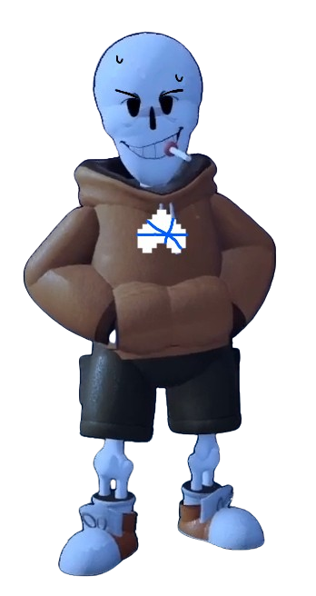

Error
Sa
ns
Undertale : Last Corridor

Swap
Papyrus
Starting Cutscene
The Charas Were Brought To Under
Swap
Papyrus Map
A Portal Opens Up and the strings Grabbed
Swap
Papyrus Soul
The Strings Will Follow Wherever The
Swap
Papyrus Moves
Information
* You Check,
Swap
Papyrus
ATK 2 DEF 0
*
Swap
Papyrus Is Annoyed That He is forced to fight When he does not want To...
*
Swap
Papyrus Damage Is Decreased By 15% !
* Don't Waste Your Time, We Have Someone Else To Dust
Data
Under
Swap
Papyrus, Thinking as to why his smoke is replaced With candy
Karmic Retribution : No
Stamina : 150
Stamina Gain Rate : Does Not Gain Stamina
Lore
Swap
Papyrus Was Hanging Out In The Corridor Smoking, When Suddenly His Smoke Turns Into Candy, Confused He Went To Go Get Another Smoke,But He saw Humans On the other side of the corridor,
Swap
Papyrus Is Confused As To Where The Humans Come From, When Suddenly Something Grabbed Him From Behind And Now
Swap
Papyrus Is Unable To Control Himself
Available Attacks
1st Move
( Spin Bones )
(6 stamina cost)
(CD : 3s)
2nd move
( Bone Toss )
(6 stamina cost)
(CD : 2s)
3rd Move
( Big Blasters )
(8 stamina cost)
(CD : 10s)
Summons Spinning Bones That Is Autoaimed To Charas
Fire a barrage of bones at the mouse cursor.
Summon 2 Big Blaster Beside You And Shoots To Your Mouse Cursor
4th Move
( Bone Wave )
(8 stamina cost)
(CD : 18s)
5th Move
( Corridor Spin Bones )
(11 stamina cost)
(CD : 30s)
6th Move
( Orange Soul )
(10 stamina cost)
(CD : 30s)
Summons A Bone Wave Infront of you going 3 different direction
Summons Spinning Bones Sliding Across The Sides Of The Corridor
Turns The Charas Team Soul Orange Making Them Unable To Stand Still Or Take Damage
7th Move
( Assist )
(0 stamina cost)
(CD : 40s)
Error
Will Send An Attack With Equal Chances Of Variants
Variant 1
Error
Summons 4 Portal Randomly Around The Map Shotting out 5 Bones Per Portal
( Damage : 5hp Per Bone )
Variant 2
Error
Summons A Portal Stretching Side To Side Of the Sans Side Corridor And Brought out 3 Blaster That Shoots Short-Burst beams At A random Chara
( Damage : 14Hp )
Variant 3
Error
Would Force Swap Papyrus To Use Bone Toss And If the Bones Hit The End Of The Corridor Error Would Redirect It Back
( Damage : 6 Per Bones )
Ways To Defeat The Puppets
The Charas Can Attack <
Swap
Papyrus Directly To Kill Him Once He ran Out Of stamina
Or Attack The Strings Behind
Swap
Papyrus/The strings in the portal In order to free Him( The Strings Takes 6 Hit Of Damage before breaking )
After You Will Fight Error Again
Short Cutscene ( Rewards For Freeing The Sans Instead Of Killing )
" ..., The one who did this must be the one who Turned my smoke into candy. "
" Get Em, Ill help you out from here "
(
Swap
Papyrus Proceed To Turn Error Orange For 8s Making Him Unable to stand still )
Error
Sa
ns